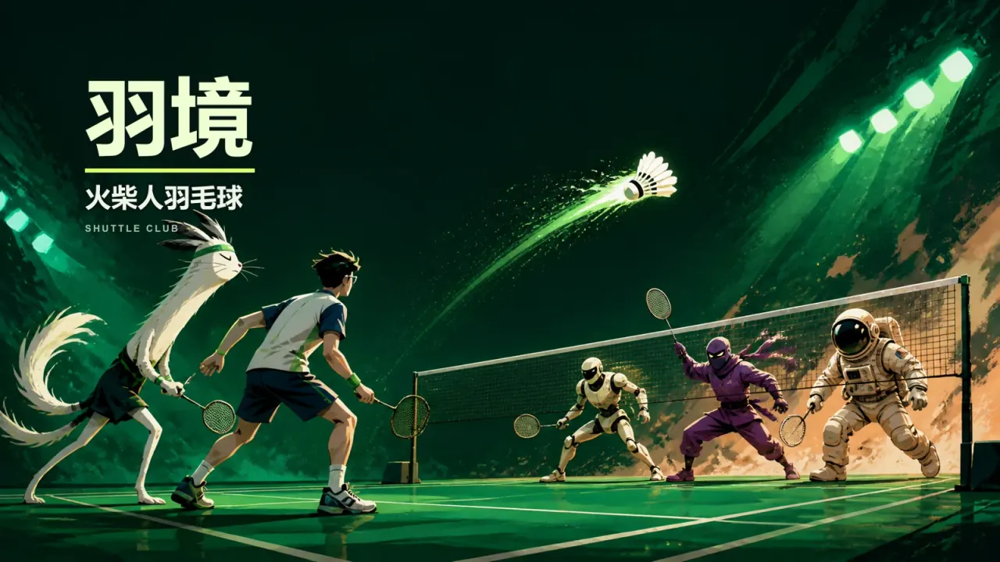
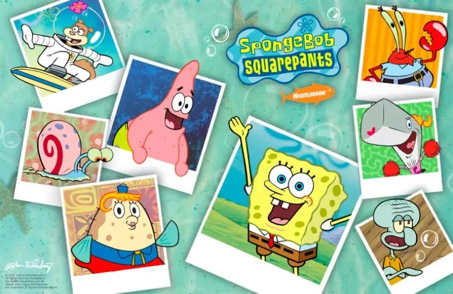
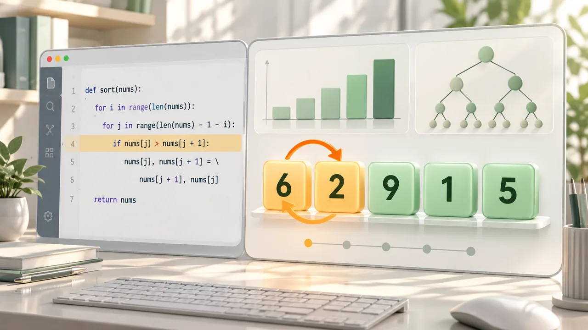
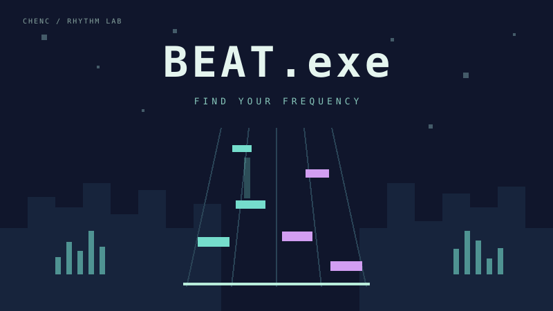
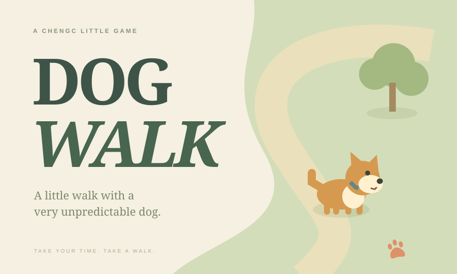

ABOUT ME / 01—03
ChenC
学习、生活与创造，
在这里相遇。
这里是我的数字花园。我会记录正在学习的知识、生活中的小事，以及从想法到成品的创作过程。希望这些内容和作品也能给你一点灵感。
阅读我的文章翻开我的三个章节
SELECTED WORKS / 精选作品
好奇心，
有了作品。
为日常做的工具，为想象打开的世界。
先看几件代表作，完整的 11 个作品在下方目录。
02 网站 / 03 工具 / 06 游戏
WEBSITES
一个网站。
许多正在发生的故事。
文章搜索与分类 · 作品与下载 · 音乐播放器 · 互动山水
TOOLS FOR LEARNING & LIFE
小工具。
解决身边的真问题。
从一次复习，
一篇笔记开始。
多书知识问答台
找到答案，
也找到出处。
从六本教材的 326 条知识点中本地检索，再由 DeepSeek 在线组织回答，提供章节引用供核对。语义模型未就绪时使用关键词检索，在线生成失败时回退知识库原文。
6本计算机相关教材
326条收录知识点
检索流程示意
我想理解一个知识点。
找到相关解释，再沿着关联知识继续探索。
需要核对？回到教材章节，查看回答依据。
本地检索 → 在线 AI 回答 → 章节引用；生成失败回退原文
首次使用需加载模型与资源。在线回答需要联网，会将问题和检索到的知识点经本站接口发送给 DeepSeek；引用供核对，不保证生成内容逐句准确。
OBSIDIAN / NOTE今天学到的
一个新知识点
一个新知识点
YOUR SITE / ARTICLE从笔记，
到一篇文章。
到一篇文章。
GAMES & IMAGINATION
打开游戏。
进入另一种可能。
历史的抉择、球场的下一拍，
还有熟悉海底世界里的小冒险。
一念天下 · 历史卡牌策略
历史提供背景，
选择创造未来。
用有限的权力、信息与资源，
面对少年嬴政的历史事件，组合自己的行动方案。
v0.3.0 试玩版 · 史实背景与艺术加工分别标注


THE COLLECTION
找到你感兴趣的那个。
全部 11 个作品
本站可访问
ChenC
学习笔记、生活故事与项目作品，在一个数字花园里相遇。苍山洱海风景支持水面互动、明暗主题与音乐播放。
个人主站
访问主站
产品详情
山海之间，记录日常。
- 博客搜索与学习 / 生活分类
- 日志时间线与独立文章页
- 互动山水、音乐播放器和明暗主题
公开在线体验与下载
ChenC 游戏站
独立的 ChenC 游戏网站，提供网页体验与成品下载入口。本站的六款游戏可从游戏页逐个发现，外站提供的内容以实际页面为准。
独立游戏网站
访问游戏站
产品详情
打开网页，把游戏带到你面前。
- 独立网站的网页体验入口
- 成品下载与说明以实际页面为准
- 本站游戏页提供当前六款游戏的介绍与入口

试玩版 · 可试玩与下载
一念天下
扮演少年嬴政，把人物、权柄、情报、资源与谋略组合成行动方案。24 步教学、14 回合、多种解法，在有限权力中处理邯郸生存与少年即位后的朝堂困境。
v0.3.0 · 历史卡牌策略 · 网页 / Windows
开始试玩
产品详情
历史提供背景，选择创造未来。
- 24 步五类卡牌实操教学
- 14 回合、多解法与目标核验
- 无刷新出牌、旧档兼容与备份
史实背景与艺术加工分别标注；全部大目标达成后才通关。
下载 Windows 版 HTML 试玩版 项目详情
可试玩与下载
节拍失控！BEAT.exe
四条音轨，八首原创音乐。在点击、长按与滑动之间找准节拍，挑战更高评级，逐步解锁新的曲目与谱面。
v1.0.2 · 网页音游 · 网页 / Windows
开始试玩
产品详情

可试玩与下载
DOG WALK
和一只有自己想法的狗狗逛公园。接飞盘、找骨头、听指令，在路上的小插曲里慢慢成为彼此最好的朋友。
v1.1.0 · 休闲遛狗 · PC / 手机 / Windows
开始试玩
产品详情
牵好绳子，去散个步。
- 三只狗狗、五项状态与自主反应
- 随机事件与三种小游戏
- 电脑宽屏 / 手机拇指操作
随时暂停，接着散步。HTML 可离线打开，Windows 自动保存进度。
Windows 正式版 HTML 试玩版 项目详情A LITTLE HELP TO START
从哪里开始？
按你的兴趣来。
想学习，想玩一会儿，
还是只是随便看看，都有一个入口。
想体验学习和效率工具？
复习教材，可以打开多书知识问答台：本地检索与 DeepSeek 在线回答相结合，生成失败会回退原文。在线回答会发送问题与相关知识点，使用前可阅读页面说明。写笔记可以安装 Note to Site，将笔记转换为文章 HTML。
哪些游戏现在就能玩？
游戏页提供六款作品：一念天下、羽境、海绵宝宝大战僵尸鱼、海底塔防、节拍失控！BEAT.exe 和 DOG WALK。《一念天下》目前为 v0.3.0 试玩版；具体平台、操作与下载以各项目详情为准。
网页、HTML 和 Windows 版有什么区别？
网页入口适合直接体验；提供单文件 HTML 的作品可下载后用浏览器离线打开。Windows 成品适合双击运行。存档方式因作品与平台而异，请查看项目详情；网页存档通常保存在当前浏览器。
下一次好奇，
也许就是下一个作品。
关于学习、生活与创造的故事，还在继续。
读读最近写下的 ↗作品持续更新，功能与版本以实际作品页面为准。工具界面为功能示意。